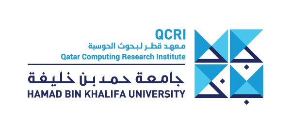

|
 |
|
Join Us at ICDE
2020 on April 23rd, 2020 at 7am CDT
Data Science
Research at
the Qatar Computing Research Institute (QCRI)
The Qatar Computing
Research Institute is celebrating its tenth anniversary this year. Since its
inception, research in data management, data analytics, and data science in general has
been the main focus of many of its scientists. A key mission
of the Institute is to advance the state-of-the-art in these research
areas and make a tangible and visible impact to society at large. In this
seminar, we will give a general introduction about QCRI and then delve into
topics related to data management, machine learning and
transportation, and data-driven healthcare that we believe would be of interest to the ICDE
community.
Theme: Data Science Research
at QCRI
Date: April 23, 2020
Time: 7am-8am CDT
Venue: Zoom Link provided by the conference
Agenda:
|
Subject |
Speaker |
|
Introduction
to QCRI (4mns) |
Mourad
Ouzzani - Principal Scientist |
|
Collaborative
Data Science (12mns) |
Mourad
Ouzzani - Principal Scientist |
|
Three
vignettes in urban computing (12mns) |
Sanjay
Chawla - Research Director |
|
Data-Driven
Healthcare (12mns) |
Faisal
Farooq -
Principal Scientist |
|
Link
Prediction via Higher-Order Motif Features (12mns) |
Ashraf
Aboulnaga -Senior Research Director |
|
QA
Session (5mns) |
All
speakers |
Abstracts
·
Collaborative Data Science - In this talk, we will showcase
our efforts in helping data scientists in some of their most painful
challenges. First, we are addressing the emerging need for building tools that
support collaborations around data. To this end, we first built a simple but
powerful collaborative data cleaning system and we are now building an
open-source crowdsourcing platform that can be easily customized and optimized
for different crowd-in-the-loop pipelines. We will also talk about our collaborative
system, Rayyan, that serves a specific community (58k+ users). In the second part of the talk, we will
describe our current efforts to automatically create a set of metadata, dubbed
data cards, such that it could be used for diverse applications in data lakes,
data marketplaces, data integration and machine learning. Data cards are sets
of quantitative metadata/metrics associated with each dataset and are computed
automatically. A well designed data card could be
quite impactful in how datasets are processed and would simplify the
communication between dataset producers and dataset consumers.
·
Three
vignettes in urban computing - In this talk, we will showcase three vignettes related to
urban computing research in QCRI: (i) a robust Estimate Arrival Time (ETA)
algorithm that is being used by the national taxi company of Qatar, (ii) a deep
learning based algorithm that directly infers the road network graph from
satellite imagery and (iii) a reinforcement learning solution for traffic
signal optimization.
·
Data-Driven Healthcare - In this talk, we …
·
Link
Prediction via Higher-Order Motif Features - Link
prediction requires predicting which new links are likely to appear in a graph.
Being able to predict unseen links with good accuracy has important
applications in several domains such as social media, security, transportation,
and recommendation systems. A common approach is to use features based on the
common neighbors of an unconnected pair of nodes to predict whether the pair
will form a link in the future. In this talk, I will present an approach for
link prediction that relies on higher-order analysis of the graph topology,
well beyond common neighbors. I will show that a set of features that depend on
the patterns or motifs that a pair of nodes occurs in captures a high level of
detail about the graph topology within the neighborhood of the pair of nodes,
which leads to a higher link prediction accuracy.
QCRI @ ICDE 2020
Tuesday, April 21, 10:00 - 11:30
Tutorial 1: “Machine Learning Meets Big Spatial
Data”
Ibrahim Sabek (University of Minnesota), Mohamed
Mokbel (Qatar Computing Research Institute, HBKU)
Wednesay, April 22, 12:00-13:30
R13.3: “Interactive Cleaning for Progressive
Visualization through Composite Questions”
Yuyu Luo (Tsinghua University); Chengliang Chai
(Tsinghua University); xuedi qin (thu); Guoliang Li (Tsinghua University); Nan
Tang (Qatar Computing Research Institute, HBKU)
Thursday, April 23, 11:00-12:30
R21.1: "Sya: Enabling Spatial Awareness
inside Probabilistic Knowledge Base Construction"
Ibrahim Sabek (MIT), Mohamed Mokbel (Qatar Computing Research
Institute, HBKU)
Thursday, April 23, 11:00-12:30
R23.2: “Reinforcement Learning with Tree-LSTM
for Join Order Selection”
Xiang Yu (Tsinghua DBgroup); Guoliang Li
(Tsinghua University); Nan Tang (Qatar Computing Research Institute, HBKU);
Chengliang Chai (Tsinghua University)
Thursday, April 23, 11:00-12:30
R23.3: “Approximate Query Processing for Data
Exploration using Deep Generative Models”
Saravanan Thirumuruganathan (Qatar Computing
Research Institute, HBKU); Shohedul Hasan (UTA); Nick Koudas (University of
Toronto); Gautam Das (U. of Texas Arlington)
Thursday, April 23, 13:00-14:30
R27.1: “ML-based Cross-Platform Query
Optimization”
Zoi Kaoudi (TU Berlin); Jorge-Arnulfo
Quiane-Ruiz (TU Berlin); Bertty Contreras-Rojas (Qatar Computing Research
Institute, HBKU); Rodrigo Pardo-Meza (Qatar Computing Research Institute,
HBKU); Anis Troudi (HBKU); Sanjay Chawla (Qatar Computing Research Institute. HBKU)
Poster Papers
“PushdownDB: Accelerating a DBMS using S3 Computation”
Xiangyao Yu (University of Wisconsin-Madison);
Matt Youill (Burnian); Matthew Woicik (MIT); Abdurrahman Ghanem (Qatar
Computing Research Institute, HBKU); Marco Serafini (University of Massachusetts Amherst); Ashraf
Aboulnaga (Qatar Computing Research Institute, HBKU); Michael
Stonebraker (MIT)
“Outdated Fact Detection in Knowledge Bases”
Shuang Hao (Beijing Jiaotong University)*;
Chengliang Chai (Tsinghua University); Guoliang Li (Tsinghua University); Nan
Tang (Qatar Computing Research Institute, HBKU); Ning Wang (School of Computer
and Information Technology, Beijing Jiaotong University); Xiang Yu (Tsinghua
DBgroup)
About The Qatar
Computing Research Institute
Qatar Computing Research Institute is a
national research institute, established in 2010 by Qatar Foundation (QF) for
Education, Science and Community Development, a private, non-profit
organization that is supporting Qatar’s transformation from a carbon economy to
a knowledge economy. QCRI operates under the umbrella of Hamad bin Khalifa
University (HBKU).
Overview: QCRI supports
QF’s mission by helping to build Qatar’s innovation and technology capacity. It
is focused on tackling large-scale computing challenges that address national
priorities for growth and development. In doing this, QCRI conducts world-class
multidisciplinary computing research that is relevant to the needs of Qatar,
the wider Arab region and the world. The institution performs cutting-edge
research in such areas as Arabic language technologies, social computing, data
analytics and cyber security. The research conduct at QCRI is aligned with
the Qatar National Research Strategy, and supports the strategic priorities
outlined in Qatar National Vision 2030.
Vision: QCRI’s vision is to be a global leader of computing research in
identified areas that will bring positive impact to the lives of citizens and
society.
Mission: Our mission is to conduct innovative, multidisciplinary applied
computing research that addresses national priorities by enhancing the quality
of life for citizens, enabling broader scientific discoveries and making local
businesses more competitive globally.